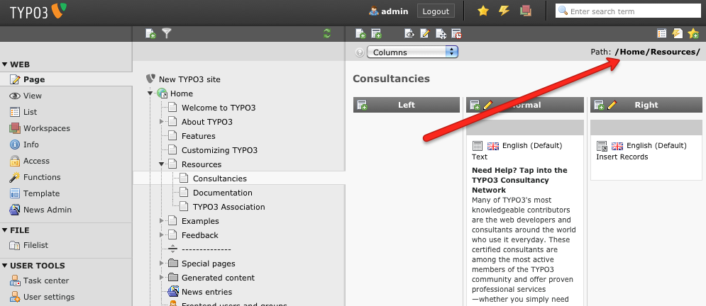
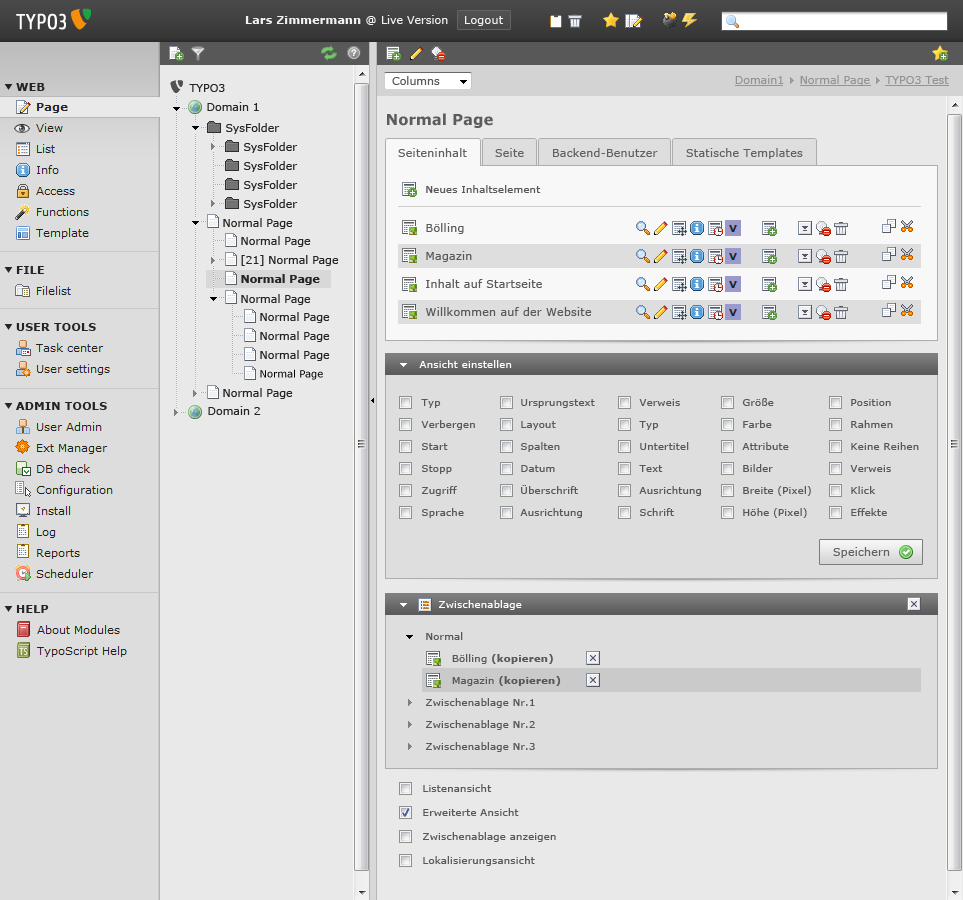
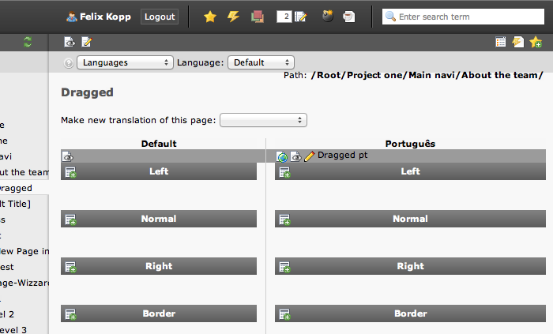
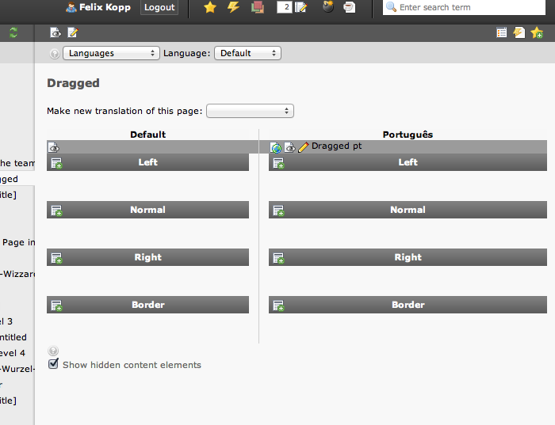
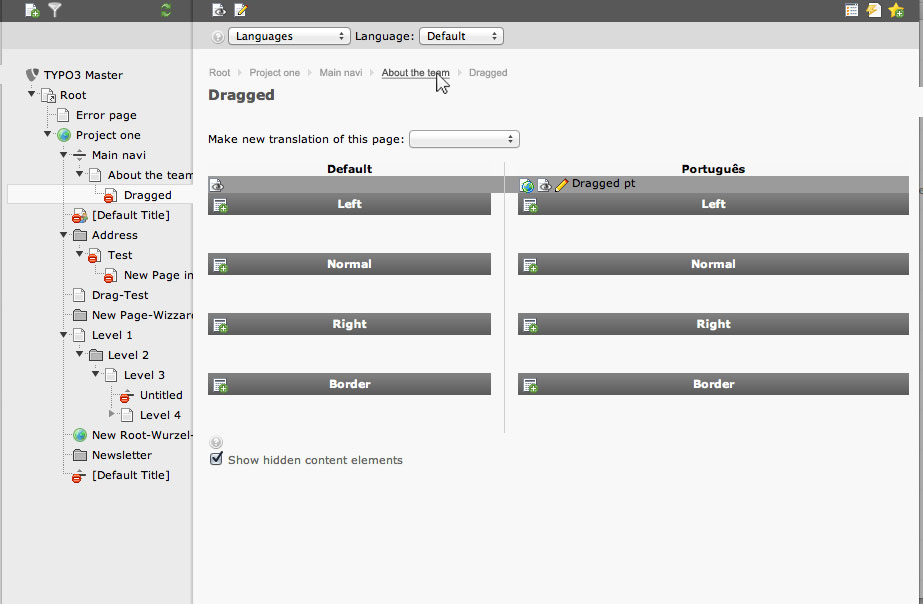
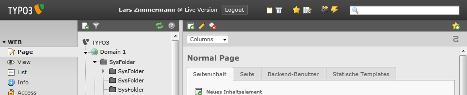
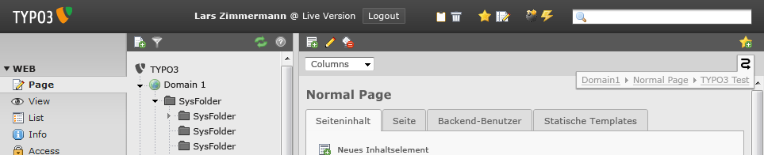
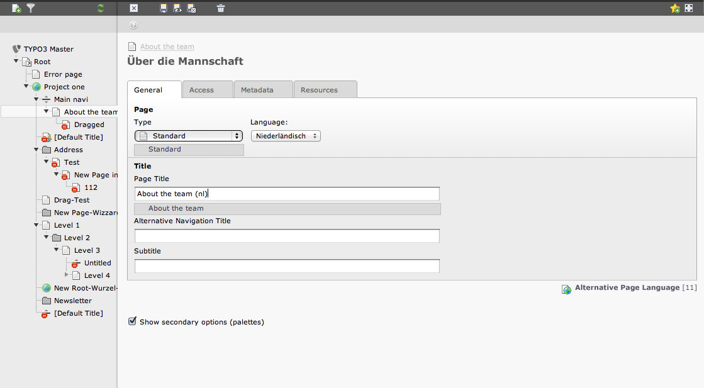
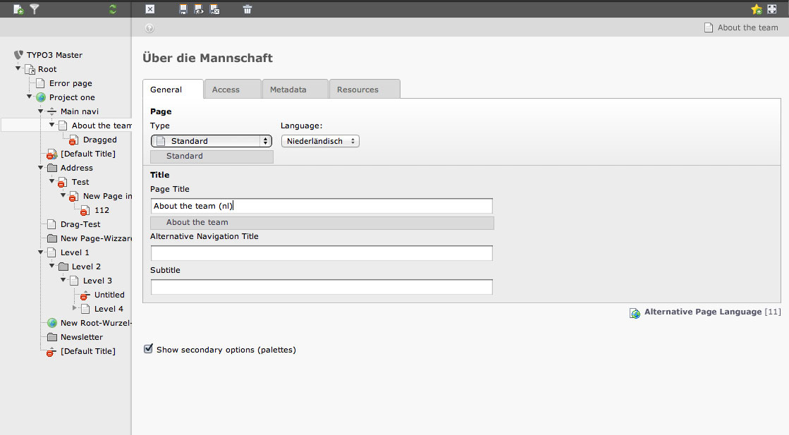
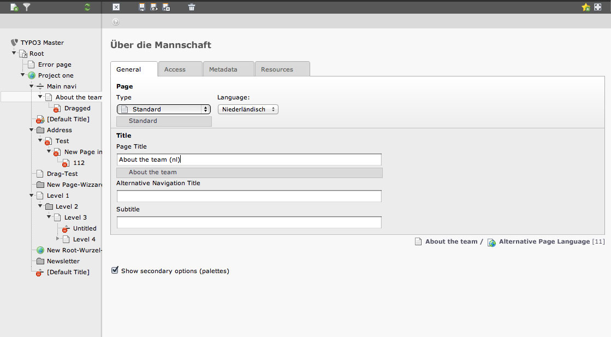

Suggestion #37864
Remove page path
| Status: | Rejected | Start date: | 2012-06-10 | |
|---|---|---|---|---|
| Priority: | Could have | Due date: | ||
| Assigned To: | Jens Hoffmann | % Done: | 0% |
|
| Category: | Usability | |||
| Target version: | TYPO3 7 | |||
| Tags: |
Description
The page path does not bring functionality or better insights to the table.
I would like to remove the page path completely.
Because the page path is only visible when the pagetree is also displayed the path could be removed.
Further more the page tree is in the working area on the right side where from a user's perspective only content of a specific folder should be.
Please feed back
{kind=link}
{kind=link}
{kind=link}
{kind=link}
{kind=link}
{kind=link}
{kind=link}
{kind=link}
{kind=link}
{kind=link}
{kind=link}
{kind=link}
Related issues
History
#1 Updated by Felix Kopp about 3 years ago
Replacement option:
Put the page path into the altnative text when hovering page tree element.
#2 Updated by Fabien Udriot about 3 years ago
- File 2012-06-13_1550.png added
I am not sure to 100% follow you. Is it what you are talking about? I wouldn't remove it like that...

#3 Updated by Jens Hoffmann about 3 years ago
- Category set to Usability
- Status changed from New to Needs Feedback
- Assigned To set to Jens Hoffmann
- Priority changed from Should have to Could have
- Target version set to TYPO3 6.0
The Path is need for smaller screens where you hide the pagetree.
As you than, with pages - with similar names, lose the context.
This is why I would like to keep it, but make it optional via the user menu.
The Path was planed as links you could click (like a rootline). See:

#4 Updated by Jens Hoffmann about 3 years ago
- File typo3_v4_4-_mai2010-01_listview-v3-02.png added
#5 Updated by Felix Kopp about 3 years ago
- File Screen_Shot_2012-06-13_at_18.28.37.png added
Sure, but in many setups the page trees are pretty deep if folders are added for several domains / navigation type / section
Root
+ Project
+ Corporate
++ Main navigation
+++ Topic1
++++ Subtopic1
++++ Textpage
++ Intranet
This rootline ofted does not fit into the croppen breadcrump path that is cropped at 50 Chars.
Especially when the page name instead of navigation title is displayed.
Also the DIV container is the first to wrap and in my opinion the page path does not add any value because when editing rather the module menu is minimized.

#6 Updated by Felix Kopp about 3 years ago
- File Screen_Shot_2012-06-13_at_18.31.24.png added
Without the page path.

#7 Updated by Fabien Udriot about 3 years ago
Also the DIV container is the first to wrap and in my opinion the page path does not add any value because when editing rather the module menu is minimized.
Couldn't we have an overflow style where text get hidden from the left whenever space limitation? We could have a "..." to show something has been hidden.
I like the re-styling idea of the breadcrumb menu better. Jens's proposition looks good.
#8 Updated by Chris topher about 3 years ago
I would also keep the path, but I agree that it looks ugly, when it jumps to a second line, because it is too long. Basically I think cutting some characters off, is the only solution like:
Home/My long page.../My very very lo.../Subpage for.../Page
However, this also does not always help: When you need the path, you can be sure that the important part, the one which you would need right now, is left out.
So what about putting in these three dots, when something has been cut off, but to add a hover effect, if something was cut off?
In my above example I would hover "My very very lo..." and would get the hover text showing the complete part like "My very very long title for working group A"
So: When you hover a part of the path, which has been cut off, the complete part could become visible.
Do you get what I mean?
#9 Updated by Felix Kopp about 3 years ago
- File TYPO3-Breadcrump-normale.jpg added
- File TYPO3-Breadcrump-Hover-area.jpg added
- File TYPO3-Breadcrump-hover-text.jpg added
Is the DocHeader the correct position for the page path?
Alternative next to the page title (either included in breadcrump or not included)
#10 Updated by Felix Kopp about 3 years ago
Normal state
Hover within breadcrump area

Hover a link within breadcrump
#11 Updated by Jigal van Hemert about 3 years ago
The path is very useful if you get lost by opening a few context menus (for example, Template module, edit whole template, Includes tab, context menu for included extension template, Edit, etc.). The page tree doesn't get updated, but it's easy to get lost in the installation. The path still shows the rootline for your current record.
It's not needed very often, but it's easy when you need it. Of course it can be in a slide-in or drop down panel waiting to be used.
#12 Updated by Francois Suter about 3 years ago
I would keep the page path, but I agree that the current form is not optimal at all. I like the idea of making is slide out by hovering over some icon.
I think the page path is very useful because if often happens that the page tree is not positioned on the right page (although it's getting better all the time).
#13 Updated by Jens Hoffmann about 3 years ago
- File Path-Overlay1.png added
- File Path-Overlay2.png added
Just to keep track - suggestions so far:
- Remove Path
- Configure Path to be removed or displayed
- Restyle Path
- Crop Path
- Move Path from DocHeader to Content section
Possible other solutions:
- Horizontal News-Ticker like sliding, on rollover in fixed box
- Crop Segments via CSS3 (*1)
- Or a overlay solution? ..


- Document: http://www.w3schools.com/cssref/css3_pr_text-overflow.asp
- Example: http://jsfiddle.net/hT3YA/
- Fallback: http://stackoverflow.com/questions/2108740/how-do-i-indicate-long-text-into-a-smaller-fixed-column-with-css
- Fallback: http://stackoverflow.com/questions/802175/truncating-long-strings-with-css-feasible-yet
#14 Updated by Christian Wolff about 3 years ago
I Would Prefer The combine the Solutions.
add an PageTS Option to set the PagePath display to one of
the following options: hide,foldout,show(Option names are up for discussion)
- hide - the pagepath is complety hidden for a cleaner BE-Layout
- foldout - there is an button addet to the doc-header as shown in in the screenshots from jens (Path-Overlay1.png,Path-Overlay2.png) with a click the path get shown as an overlay.
- show - the pagepath is always shown
in anycase the pagepath shoud be limited via css overflow if its too long.
and the pages should be linked.
#15 Updated by Daniel Siepmann about 3 years ago
I like the path.
Sometimes you are working on specific content, or opened content through search and don't know the pid or page name.
It's an easy way to get the two information and you can easily copy them.
I like this behavior.
If I've to choose one of the shown examples I'll prefer http://forge.typo3.org/attachments/21339/typo3_v4_4-_mai2010-01_listview-v3-02.png with pid.
{kind=link}
#16 Updated by Felix Kopp about 3 years ago
- File 1-page_title.jpg added
- File 2-docheader.jpg added
- File 3-footer.jpg added
What is the page path for and when is it used?¶
- Display parent page/folder of records.
- Page tree sometimes does not jump to the correct parent page.
- Find pid of parent record
What are the negative remarks?¶
- Important parts often left out, when cropped with "..."
- Styling
- Can not be clicked
I think it is very interesting that it seems like most of the page path is not needed at all.
The most important use case is to find the parent folder of a record or parent page of a page.
Two things must to me accomplished:
- Make parent page/folder clickable to open page in list view (or edit scope?)
- Position the parent page/folder easily accessible
- Put parent record in context of current record
Striping the page path to just the parent record solves the width issues right away.
That solves two problems at once - width of the parent page information

Putting the parent record title next to the current records title might make sense because the record's title and parent's title are related.

Keeping the parent record in the docheader makes sense when not changing to much.
But the Docheader might not be the right place. The Docheader hosts the function menu.

Also a good please because of the anyways displayed record's data.
#17 Updated by Sebastian Müller about 3 years ago
First of all, I consider the page path as a useful information for reasons already mentioned from others above.
I really like the overlay idea of Jens Hoffmann.
Like displayed there and also often wished, the feature of clickable parent pages is desirable.
To Felix Kopps suggest:
Make parent page/folder clickable to open page in list view (or edit scope?)
I think the page opended in list view is the better way since this is in my opinion needed more often than editing the specific site. If you want to edit the page you can click edit page properties afterwards.
Greets,
Sebastian
#18 Updated by Felix Kopp about 3 years ago
To sum up.
- The page path shall not be removed.
- The single pages must be clickable to open the page (not the edit mask).
- The page path should be eight a new fly-out element or a uncropped overflow elipsis.
That already is a pretty huge improvement, cheers.
#19 Updated by Bart Dubelaar about 3 years ago
Make it behave properly in workspaces. Right now it always shows the Live path of a record and not the path in the draft workspace. The titles in draft may be different as well as the location. See http://forge.typo3.org/issues/36285 .
This is a very easy fix, I have already fixed the underlying BEgetRootLine function such that the correct paths are generated, incorporated in fix for http://forge.typo3.org/issues/39197 (under review).
#20 Updated by Felix Kopp over 2 years ago
Please reject the issue.
#21 Updated by Jens Hoffmann over 2 years ago
What is the status?
What is now implemented?
#22 Updated by Jens Hoffmann over 2 years ago
- Assigned To changed from Jens Hoffmann to Felix Kopp
#23 Updated by Felix Kopp about 2 years ago
The primary issue "Remove page path" is rejected.
Please close issue.
#24 Updated by Jens Hoffmann almost 2 years ago
What has now been done?
This is not done for me, yet.
We made a proposal.
Just because you didn't like it, doesn't mean - it could be closed.
Greez Jens
#25 Updated by Aimo Künkel almost 2 years ago
I really like the idea of Christian Wolff for having three options.
I would definitely hide everything, because that's what i currently do by ugly xclassing.
If foldout is implemented nicely, i'd also have a look on it, but currently the path on relevant pages is always > 1920px width due to deep trees so this line is a real mess.
Any updates on it?
#26 Updated by Jens Hoffmann almost 2 years ago
- Assigned To changed from Felix Kopp to Jens Hoffmann
- Target version changed from TYPO3 6.0 to TYPO3 7
I'm not a big fan of option at that point.
I would stick to the "fould out" solution.
But maybe we could combine Felix suggestion
with a "real name" instead of just an icon there.
Greez Jens
#27 Updated by Felix Kopp 9 months ago
- Status changed from Needs Feedback to Rejected